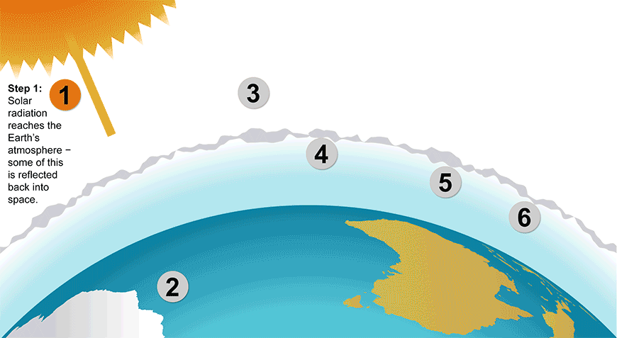

Water vapor
The most abundant greenhouse gas, but importantly, it acts as a feedback to the climate. Water vapor increases as the Earth's atmosphere warms, but so does the possibility of clouds and precipitation, making these some of the most important feedback mechanisms to the greenhouse effect.
Nitrous Oxide (NO2)
A powerful greenhouse gas produced by soil cultivation practices, especially the use of commercial and organic fertilizers, fossil fuel combustion, nitric acid production, and biomass burning.


Sources: NASA, environment.gov.au